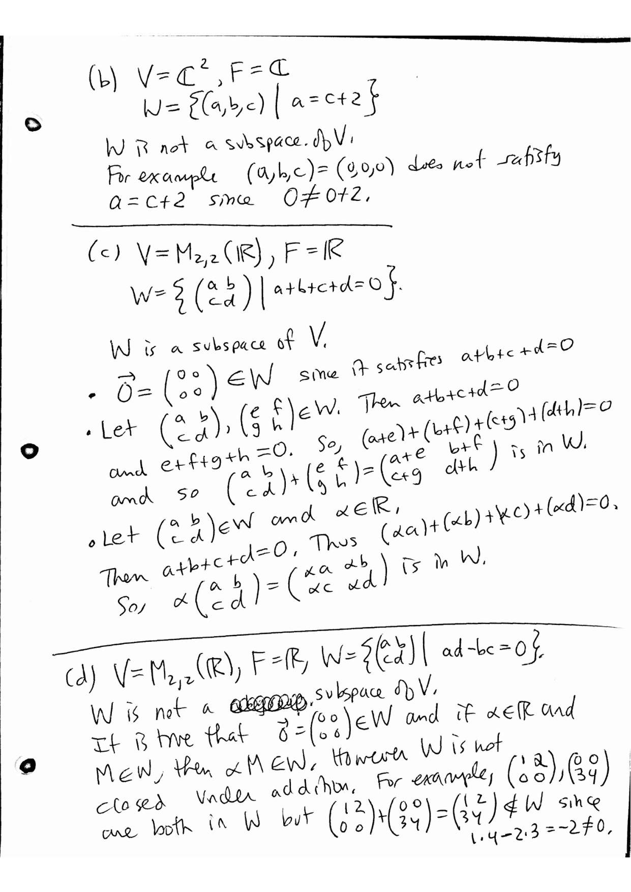
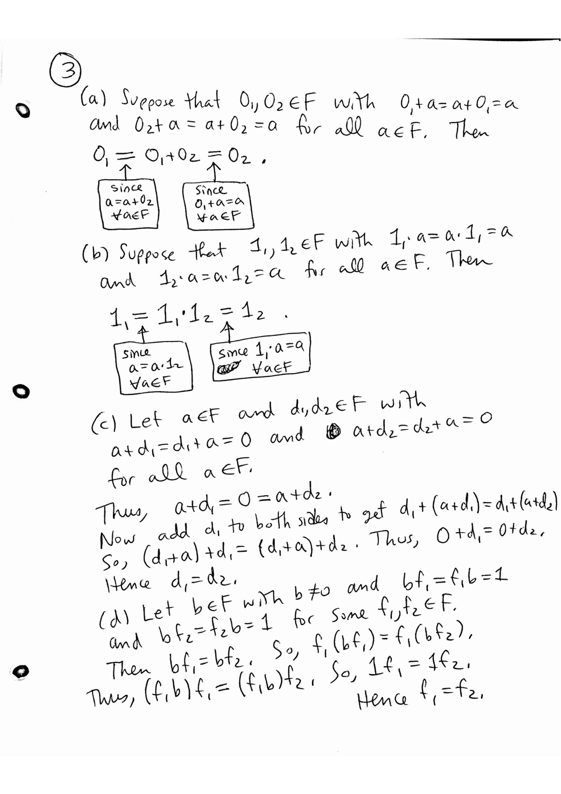
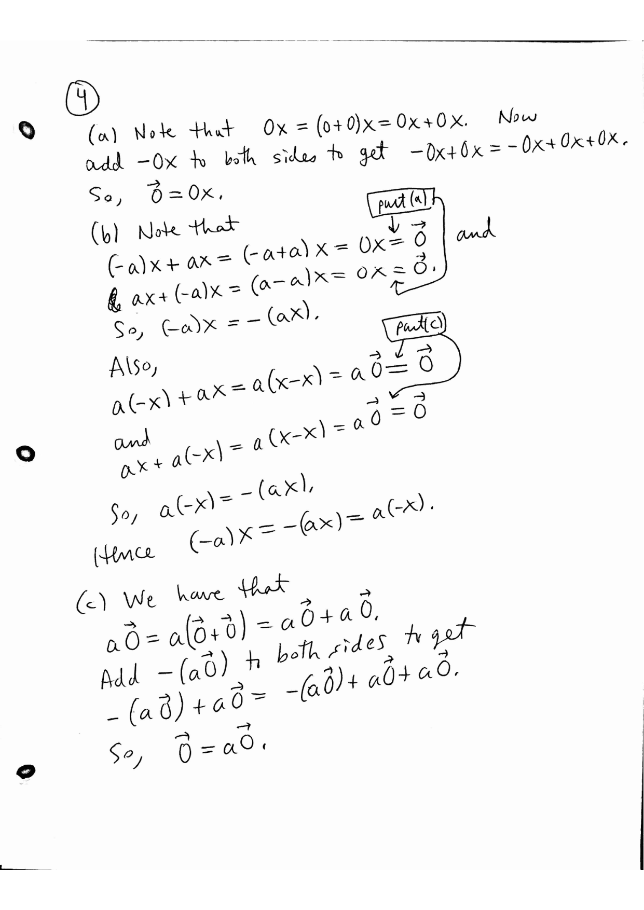
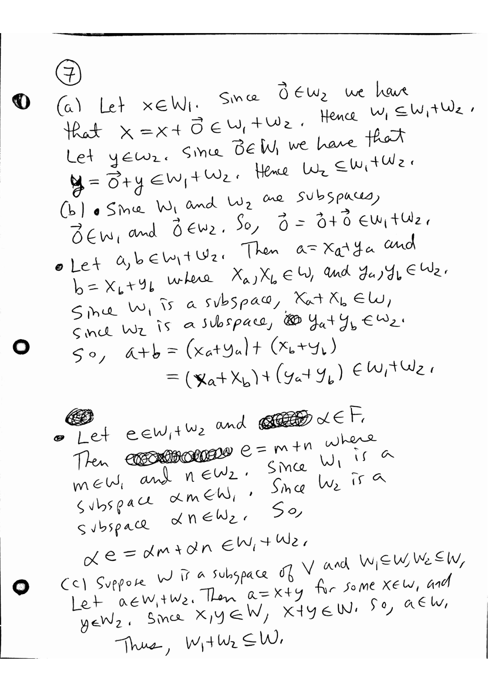

MATH 4570 Topic 1: Vector spaces and subspaces
Krebs' Fall 2026 MATH 4570 homework and extra practice problems, retyped verbatim from his PDFs. Homework solutions are Krebs' official ones (his pages, shown as images); extra-practice solutions are Claude's and labeled so. Tap "Solution" under a problem to jump to it, and "Problem" to jump back.
For: Quiz 1 (Wed Sep 9) · all quiz dates
Problems
Homework for Topic 1
1(a)
Are the following vector spaces? Prove or disprove.
Let
$$V = C(\mathbb{R}) = \{f : \mathbb{R} \to \mathbb{R} \mid \text{f is continuous on all of } \mathbb{R}\}$$
and $F = \mathbb{R}$. For example, $f_1(x) = x^2$ and $f_2(x) = \sin(x)$ are in $V$. Vector addition is the usual function addition defined as $(f + g)(x) = f(x) + g(x)$ and scalar multiplication is the usual defined as $(\alpha f)(x) = \alpha \cdot f(x)$
1(b)
$V = \mathbb{R}^2$ and $F = \mathbb{R}$ where vector addition is defined as $(x, y) + (a, b) = (x + a, y + b)$ and scalar multiplication is defined as
$\alpha \odot (x, y) = (2\alpha x, 2\alpha y)$.
[Here I changed the notation for the scalar multiplication to $\odot$ since it is different from the usual scalar multiplication.]
1(c)
$V$ is the set of positive real numbers, that is $V = \{x \in \mathbb{R} \mid x > 0\}$ and $F = \mathbb{R}$ where vector addition is defined as $x \oplus y = xy$ and scalar multiplication is defined as $\alpha \odot x = x^{\alpha}$.
[Here I changed the notation to $\oplus$ and $\odot$ to reflect that we are defining a new plus and scalar multiplication that is different from the usual one.]
2(a)
Are the following sets $W$ subspaces of the vector spaces $V$ ? Prove or disprove.
$V = \mathbb{R}^3$, $F = \mathbb{R}$, $W = \{(a, b, c) \mid a = 3b \text{ and } c = -b\}$
2(c)
$V = M_{2,2}(\mathbb{R})$, $F = \mathbb{R}$, $W = \left\{ \begin{pmatrix} a & b \\ c & d \end{pmatrix} \mid a + b + c + d = 0 \right\}$
2(d)
$V = M_{2,2}(\mathbb{R})$, $F = \mathbb{R}$, $W = \left\{ \begin{pmatrix} a & b \\ c & d \end{pmatrix} \mid ad - bc = 0 \right\}$
2(e)
$V = P_3(\mathbb{R})$, $F = \mathbb{R}$, $W = \{a + bx + cx^2 + dx^3 \mid a = 0\}$
3(a)
Let $F$ be a field. Prove the following.
Let $0_1$ and $0_2$ be in $F$ where $0_1 + a = a + 0_1 = a$ and $0_2 + a = a + 0_2 = a$ for all $a \in F$. Show that $0_1 = 0_2$.
3(b)
Let $1_1$ and $1_2$ be in $F$ where $1_1 \cdot a = a \cdot 1_1 = a$ and $1_2 \cdot a = a \cdot 1_2 = a$ for all $a \in F$. Show that $1_1 = 1_2$.
3(c)
Let $a \in F$ and $d_1, d_2 \in F$. If $a + d_1 = d_1 + a = 0$ and $a + d_2 = d_2 + a = 0$, then $d_1 = d_2$.
3(d)
Let $b \in F$ with $b \neq 0$ and $f_1, f_2 \in F$. If $b \cdot f_1 = f_1 \cdot b = 1$ and $b \cdot f_2 = f_2 \cdot b = 1$, then $f_1 = f_2$.
4(a)
Let $V$ be a vector space over a field $F$. Prove the following.
For each $x \in V$ we have that $0x = \mathbf{0}$. Here $0$ is the additive identity of $F$ and $\mathbf{0}$ is the additive identity of $V$.
4(c)
For each $a \in F$ we have that $a\mathbf{0} = \mathbf{0}$ where $\mathbf{0}$ is the additive identity of $V$.
5
Let $V$ be a vector space of a field $F$. Let $W$ be a subset of $V$. Then $W$ is a subspace of $V$ if and only if the following three conditions hold.
(a) $\mathbf{0} \in W$
(b) If $x, y \in W$ then $x + y \in W$.
(c) If $c \in F$ and $x \in W$ then $cx \in W$.
6
Let $V$ be a vector space over a field $F$. Let $W_1$ and $W_2$ be subspaces of $V$. Prove that $W_1 \cap W_2$ is a subspace of $V$.
7(a)
Let $V$ be a vector space over a field $F$. Let $W_1$ and $W_2$ be subspaces of $V$. Define the sum of $W_1$ and $W_2$ to be the set
$$W_1 + W_2 = \{x + y \mid x \in W_1 \text{ and } y \in W_2\}$$
Prove that $W_1 \subset W_1 + W_2$ and $W_2 \subset W_1 + W_2$.
7(c)
Prove that if $W$ is subspace of $V$ that contains both $W_1$ and $W_2$ then $W$ also contains $W_1 + W_2$.
Extra practice problems for Topic 1
These problems were generated by AI, and although I looked at them quickly to see if they seemed OK, no guarantees. Please let me know if something doesn't make sense, so I can fix it.
1(a)
Are the following vector spaces? Prove or disprove.
Let
$$V = \{f : \mathbb{R} \to \mathbb{R} \mid f \text{ is differentiable on } \mathbb{R}\}$$
and let $F = \mathbb{R}$. Vector addition and scalar multiplication are the usual operations on functions:
$$(f + g)(x) = f(x) + g(x) \qquad \text{and} \qquad (\alpha f)(x) = \alpha f(x).$$
1(b)
Let $V = \mathbb{R}^2$ and $F = \mathbb{R}$. Vector addition is the usual addition, but scalar multiplication is defined by
$$\alpha \odot (x, y) = (\alpha x, y).$$
1(c)
Let $V = \mathbb{R}$ and $F = \mathbb{R}$. Define vector addition and scalar multiplication by
$$x \oplus y = x + y - 1 \qquad \text{and} \qquad \alpha \odot x = \alpha x - \alpha + 1.$$
1(d)
Let $V$ be the set of all positive real numbers and let $F = \mathbb{R}$. Define
$$x \oplus y = xy \qquad \text{and} \qquad \alpha \odot x = x^{\alpha}.$$
2(a)
Are the following sets $W$ subspaces of the indicated vector spaces $V$? Prove or disprove.
$$V = \mathbb{R}^3, \qquad W = \{(a, b, c) \in \mathbb{R}^3 \mid a - 2b + c = 0\}.$$
2(c)
$$V = \mathbb{C}^2, \qquad W = \{(z_1, z_2) \in \mathbb{C}^2 \mid z_2 = \overline{z_1}\},$$
where $V$ is regarded as a vector space over $\mathbb{C}$.
2(d)
$$V = \mathbb{C}^2, \qquad W = \{(z_1, z_2) \in \mathbb{C}^2 \mid z_2 = \overline{z_1}\},$$
where $V$ is instead regarded as a vector space over $\mathbb{R}$.
2(e)
$$V = M_{2,2}(\mathbb{R}), \qquad W = \left\{ \begin{pmatrix} a & b \\ c & d \end{pmatrix} \;\middle|\; a = d \right\}.$$
2(f)
$$V = M_{2,2}(\mathbb{R}), \qquad W = \left\{ \begin{pmatrix} a & b \\ c & d \end{pmatrix} \;\middle|\; a^2 + b^2 + c^2 + d^2 = 0 \right\}.$$
3(a)
Let $F$ be a field. Prove the following statements directly from the field axioms.
If $a, b, c \in F$ and $a + b = a + c$, then $b = c$.
4(a)
Let $V$ be a vector space over a field $F$. Prove the following.
If $x, y, z \in V$ and $x + y = x + z$, then $y = z$.
5
Let $V$ be a vector space over a field $F$, and let $W$ be a nonempty subset of $V$. Suppose that
$$ax + by \in W$$
whenever $x, y \in W$ and $a, b \in F$. Prove that $W$ is a subspace of $V$.
6(a)
Let $V$ be a vector space over a field $F$, and let $W_1$ and $W_2$ be subspaces of $V$.
Prove that $W_1 \cup W_2$ is a subspace of $V$ if $W_1 \subseteq W_2$ or $W_2 \subseteq W_1$.
6(b)
Prove that if $W_1 \cup W_2$ is a subspace of $V$, then either $$W_1 \subseteq W_2 \qquad \text{or} \qquad W_2 \subseteq W_1.$$
6(c)
Give an example of two subspaces $W_1, W_2$ of $\mathbb{R}^2$ for which $W_1 \cup W_2$ is not a subspace.
7(a)
Let $V$ be a vector space over a field $F$, and let $W_1, W_2, W_3$ be subspaces of $V$. Define
$$W_1 + W_2 + W_3 = \{x_1 + x_2 + x_3 \mid x_1 \in W_1,\; x_2 \in W_2,\; x_3 \in W_3\}.$$
Prove that $W_1 + W_2 + W_3$ is a subspace of $V$.
7(c)
Suppose that $U$ is a subspace of $V$ containing $W_1, W_2$, and $W_3$. Prove that $$W_1 + W_2 + W_3 \subseteq U.$$
8(a)
Let $V = P_3(\mathbb{R})$, and define
$$W_1 = \{p(x) \in P_3(\mathbb{R}) \mid p(0) = 0\}$$
and
$$W_2 = \{p(x) \in P_3(\mathbb{R}) \mid p(1) = 0\}.$$
Prove that $W_1$ and $W_2$ are subspaces of $V$.
8(d)
For each of the following polynomials, find $p_1(x) \in W_1$ and $p_2(x) \in W_2$ such that
$$p(x) = p_1(x) + p_2(x):$$
$$p(x) = 1, \qquad p(x) = x^2 + 2x + 3, \qquad p(x) = 2x^3 - x + 4.$$
Computational extra practice problems for Topic 1
Computational Practice Set
These problems were generated by AI, and although I looked at them quickly to see if they seemed OK, no guarantees. Please let me know if something doesn't make sense, so I can fix it.
2(a)
Let
$$A = \begin{pmatrix} 2 & -1 \\ 3 & 4 \end{pmatrix}, \qquad B = \begin{pmatrix} -3 & 5 \\ 1 & -2 \end{pmatrix}.$$
Compute each of the following.
$4A$
3(a)
Let
$$C = \begin{pmatrix} 1 & -2 & 4 \\ 0 & 3 & -1 \end{pmatrix}, \qquad D = \begin{pmatrix} -3 & 5 & 2 \\ 4 & -1 & 6 \end{pmatrix}.$$
Compute each of the following.
$2C$
4(a)
Let
$$p(x) = 2 - 3x + 4x^2, \qquad q(x) = -1 + 5x - 2x^2.$$
Compute and simplify each of the following polynomials.
$p(x) + q(x)$
5(a)
For each vector, determine whether it belongs to the indicated set $W$. No proof is required; check the defining equations.
Let
$$W = \{(a, b, c) \in \mathbb{R}^3 \mid a = 2b - c\}.$$
Determine which of the following vectors belong to $W$:
$$(3, 2, 1), \qquad (0, 1, 2), \qquad (-5, -2, 1).$$
5(b)
Let
$$W = \{(a, b, c, d) \in \mathbb{R}^4 \mid a + b = 0 \text{ and } c = 2d\}.$$
Determine which of the following vectors belong to $W$:
$$(1, -1, 6, 3), \qquad (2, -2, 3, 6), \qquad (0, 0, -4, -2).$$
5(c)
Let
$$W = \left\{ \begin{pmatrix} a & b \\ c & d \end{pmatrix} \in M_{2,2}(\mathbb{R}) \;\middle|\; a + d = 0 \right\}.$$
Determine which of the following matrices belong to $W$:
$$\begin{pmatrix} 2 & 1 \\ 4 & -2 \end{pmatrix}, \qquad \begin{pmatrix} -3 & 0 \\ 5 & 3 \end{pmatrix}, \qquad \begin{pmatrix} 1 & -1 \\ -1 & 1 \end{pmatrix}.$$
5(d)
Let
$$W = \{p(x) \in P_3(\mathbb{R}) \mid p(1) = 0\}.$$
Determine which of the following polynomials belong to $W$:
$$x^2 - 1, \qquad 2x^3 - x + 1, \qquad x^3 - 3x + 2.$$
6(a)
Let
$$W_1 = \{(a, b, 0) \mid a, b \in \mathbb{R}\}$$
and
$$W_2 = \{(0, b, c) \mid b, c \in \mathbb{R}\}.$$
Determine which of the following vectors belong to $W_1$:
$$(2, -1, 0), \qquad (0, 3, 4), \qquad (-2, 5, 0).$$
6(f)
Find three different ways to write $$(1, 4, -3)$$ in the form $u + v$, where $u \in W_1$ and $v \in W_2$.
7(a)
In the remaining problems, all arithmetic is performed modulo the indicated prime $p$. Write each coordinate as one of
$$0, 1, \ldots, p - 1.$$
Compute the following in $\mathbb{Z}_5^3$.
$$(2, 4, 1) + (3, 2, 4).$$
9(a)
Perform the following matrix computations over the indicated field.
Over $\mathbb{Z}_5$, compute
$$3\begin{pmatrix} 2 & 4 \\ 1 & 3 \end{pmatrix}.$$
9(b)
Over $\mathbb{Z}_5$, compute
$$2\begin{pmatrix} 1 & 3 \\ 4 & 2 \end{pmatrix} + 4\begin{pmatrix} 3 & 2 \\ 1 & 4 \end{pmatrix}.$$
9(c)
Over $\mathbb{Z}_7$, compute
$$5\begin{pmatrix} 4 & 6 & 2 \\ 3 & 1 & 5 \end{pmatrix}.$$
Solutions
Krebs' official solutions: Homework for Topic 1




Solutions by Claude (not official)
Extra practice problems for Topic 1
1(a) (Claude, not official)
Yes, $V$ is a vector space.
Closure. If $f, g$ are differentiable on $\mathbb{R}$ and $\alpha \in \mathbb{R}$, then $f+g$ and $\alpha f$ are differentiable on $\mathbb{R}$ (sum rule and constant-multiple rule: $(f+g)' = f' + g'$, $(\alpha f)' = \alpha f'$). So $f + g \in V$ and $\alpha f \in V$.
Now check the axioms. Two functions are equal when they agree at every $x \in \mathbb{R}$, so each axiom reduces to a property of real numbers. Let $f, g, h \in V$, $\alpha, \beta \in \mathbb{R}$, and $x \in \mathbb{R}$.
(V1) $(f+g)(x) = f(x)+g(x) = g(x)+f(x) = (g+f)(x)$, so $f+g=g+f$.
(V2) $[f+(g+h)](x) = f(x)+g(x)+h(x) = [(f+g)+h](x)$, so $f+(g+h) = (f+g)+h$.
(V3) Let $\mathbf{0}$ be the function $\mathbf{0}(x) = 0$ for all $x$. It is differentiable (derivative $0$), so $\mathbf{0} \in V$, and $(f+\mathbf{0})(x) = f(x) + 0 = f(x)$ and $(\mathbf{0}+f)(x) = f(x)$. So $\mathbf{0}$ is a zero vector.
(V4) Given $f \in V$, define $(-f)(x) = -f(x)$. Then $-f = (-1)f$ is differentiable, so $-f \in V$, and $(f + (-f))(x) = f(x) - f(x) = 0 = \mathbf{0}(x)$; similarly $(-f)+f = \mathbf{0}$.
(V5) $(1 \cdot f)(x) = 1 \cdot f(x) = f(x)$, so $1f = f$.
(V6) $[(\alpha\beta)f](x) = (\alpha\beta)f(x) = \alpha(\beta f(x)) = [\alpha(\beta f)](x)$.
(V7) $[\alpha(f+g)](x) = \alpha(f(x)+g(x)) = \alpha f(x) + \alpha g(x) = (\alpha f + \alpha g)(x)$.
(V8) $[(\alpha+\beta)f](x) = (\alpha+\beta)f(x) = \alpha f(x) + \beta f(x) = (\alpha f + \beta f)(x)$.
All eight axioms hold, so $V$ is a vector space over $\mathbb{R}$. (Alternatively: $V$ is a subset of the vector space of all functions $\mathbb{R} \to \mathbb{R}$ that contains the zero function and is closed under $+$ and scalar multiplication, so it is a subspace, hence a vector space.)
1(b) (Claude, not official)
No, this is not a vector space. Axiom (V8), $(\alpha + \beta) \odot w = (\alpha \odot w) + (\beta \odot w)$, fails.
Counterexample: take $\alpha = \beta = 1$ and $w = (0, 1)$. Then
$$(1 + 1) \odot (0,1) = 2 \odot (0,1) = (2 \cdot 0, 1) = (0, 1),$$
while
$$(1 \odot (0,1)) + (1 \odot (0,1)) = (0,1) + (0,1) = (0, 2).$$
Since $(0,1) \neq (0,2)$, (V8) fails, so $V$ is not a vector space with these operations.
(In general $(\alpha+\beta)\odot(x,y) = ((\alpha+\beta)x, y)$ but $\alpha\odot(x,y) + \beta\odot(x,y) = ((\alpha+\beta)x, 2y)$; these differ whenever $y \neq 0$.)
1(c) (Claude, not official)
Yes, $V$ is a vector space (the "zero vector" is the real number $1$).
Closure. For $x, y, \alpha \in \mathbb{R}$, both $x + y - 1$ and $\alpha x - \alpha + 1$ are real numbers, so $x \oplus y \in V$ and $\alpha \odot x \in V$.
Let $x, y, z \in V$ and $a, b \in F = \mathbb{R}$.
(V1) $x \oplus y = x + y - 1 = y + x - 1 = y \oplus x$.
(V2) $x \oplus (y \oplus z) = x + (y + z - 1) - 1 = x + y + z - 2$ and $(x \oplus y) \oplus z = (x + y - 1) + z - 1 = x + y + z - 2$. They are equal.
(V3) Let $\mathbf{0} = 1$. Then $x \oplus 1 = x + 1 - 1 = x$ and $1 \oplus x = 1 + x - 1 = x$. So $1$ is the zero vector of $V$.
(V4) Given $x \in V$, let $z = 2 - x \in V$. Then $x \oplus z = x + (2 - x) - 1 = 1 = \mathbf{0}$ and $z \oplus x = (2-x) + x - 1 = 1 = \mathbf{0}$. So $2 - x$ is the additive inverse of $x$.
(V5) $1 \odot x = 1\cdot x - 1 + 1 = x$.
(V6) $(ab) \odot x = abx - ab + 1$, and
$$a \odot (b \odot x) = a(bx - b + 1) - a + 1 = abx - ab + a - a + 1 = abx - ab + 1.$$
They are equal.
(V7) $a \odot (x \oplus y) = a(x + y - 1) - a + 1 = ax + ay - 2a + 1$, and
$$(a \odot x) \oplus (a \odot y) = (ax - a + 1) + (ay - a + 1) - 1 = ax + ay - 2a + 1.$$
They are equal.
(V8) $(a + b) \odot x = (a+b)x - (a+b) + 1 = ax + bx - a - b + 1$, and
$$(a \odot x) \oplus (b \odot x) = (ax - a + 1) + (bx - b + 1) - 1 = ax + bx - a - b + 1.$$
They are equal.
All eight axioms hold, so $V$ is a vector space over $\mathbb{R}$.
(Why this works: the map $\varphi(x) = x - 1$ satisfies $\varphi(x \oplus y) = \varphi(x) + \varphi(y)$ and $\varphi(\alpha \odot x) = \alpha\varphi(x)$, so these are just the usual operations on $\mathbb{R}$ with everything shifted by $1$.)
1(d) (Claude, not official)
Yes, $V$ is a vector space. (This is the same space as Homework 1, Problem 1(c).)
Closure. If $x, y > 0$ and $\alpha \in \mathbb{R}$, then $xy > 0$ and $x^{\alpha} > 0$, so $x \oplus y \in V$ and $\alpha \odot x \in V$.
Let $x, y, z \in V$ and $a, b \in \mathbb{R}$.
(V1) $x \oplus y = xy = yx = y \oplus x$.
(V2) $x \oplus (y \oplus z) = x(yz) = (xy)z = (x \oplus y) \oplus z$.
(V3) Let $\mathbf{0} = 1$. Since $1 > 0$, $1 \in V$, and $x \oplus 1 = x \cdot 1 = x = 1 \cdot x = 1 \oplus x$. So $1$ is the zero vector.
(V4) Given $x \in V$, let $z = \frac{1}{x}$. Since $x > 0$, $z > 0$, so $z \in V$, and $x \oplus z = x \cdot \frac{1}{x} = 1 = \mathbf{0}$, $z \oplus x = 1 = \mathbf{0}$.
(V5) $1 \odot x = x^1 = x$.
(V6) $(ab) \odot x = x^{ab} = (x^b)^a = a \odot (x^b) = a \odot (b \odot x)$.
(V7) $a \odot (x \oplus y) = (xy)^a = x^a y^a = (a \odot x) \oplus (a \odot y)$.
(V8) $(a+b) \odot x = x^{a+b} = x^a x^b = (a \odot x) \oplus (b \odot x)$.
All eight axioms hold (using the laws of exponents for positive real bases), so $V$ is a vector space over $\mathbb{R}$.
2(a) (Claude, not official)
Yes, $W$ is a subspace. We use the subspace test (Homework Problem 5).
(a) $(0,0,0) \in W$ since $0 - 2\cdot 0 + 0 = 0$.
(b) Let $(a_1,b_1,c_1), (a_2,b_2,c_2) \in W$, so $a_1 - 2b_1 + c_1 = 0$ and $a_2 - 2b_2 + c_2 = 0$. Their sum is $(a_1+a_2, b_1+b_2, c_1+c_2)$ and
$$(a_1+a_2) - 2(b_1+b_2) + (c_1+c_2) = (a_1 - 2b_1 + c_1) + (a_2 - 2b_2 + c_2) = 0 + 0 = 0,$$
so the sum is in $W$.
(c) Let $(a,b,c) \in W$ and $\alpha \in \mathbb{R}$. Then $\alpha(a,b,c) = (\alpha a, \alpha b, \alpha c)$ and $\alpha a - 2\alpha b + \alpha c = \alpha(a - 2b + c) = \alpha \cdot 0 = 0$, so $\alpha(a,b,c) \in W$.
Hence $W$ is a subspace of $\mathbb{R}^3$.
2(b) (Claude, not official)
No, $W$ is not a subspace. The zero vector $(0,0,0)$ is not in $W$, because $0 - 2\cdot 0 + 0 = 0 \neq 1$. Every subspace must contain $\mathbf{0}$, so $W$ is not a subspace.
(It also fails closure: $(1,0,0) \in W$ but $(1,0,0)+(1,0,0) = (2,0,0)$ has $2 - 0 + 0 = 2 \neq 1$.)
2(c) (Claude, not official)
No, $W$ is not a subspace of $\mathbb{C}^2$ over $\mathbb{C}$. It fails closure under (complex) scalar multiplication.
Take $(1, 1) \in W$ (since $\overline{1} = 1$) and the scalar $i \in \mathbb{C}$. Then $i(1,1) = (i, i)$. But $\overline{i} = -i \neq i$, so $(i, i) \notin W$.
(Note $W$ does contain $\mathbf{0} = (0,0)$ and is closed under addition, since $\overline{z_1 + w_1} = \overline{z_1} + \overline{w_1}$. The failure is only for non-real scalars, because $\overline{\alpha z_1} = \overline{\alpha}\,\overline{z_1}$, which equals $\alpha \overline{z_1}$ only when $\alpha$ is real. Compare with part (d).)
2(d) (Claude, not official)
Yes, $W$ is a subspace of $\mathbb{C}^2$ over $\mathbb{R}$. We use the subspace test; now the scalars are only real numbers.
(a) $(0,0) \in W$ since $\overline{0} = 0$.
(b) Let $(z_1, z_2), (w_1, w_2) \in W$, so $z_2 = \overline{z_1}$ and $w_2 = \overline{w_1}$. Then
$$z_2 + w_2 = \overline{z_1} + \overline{w_1} = \overline{z_1 + w_1},$$
so $(z_1,z_2) + (w_1,w_2) = (z_1 + w_1, z_2 + w_2) \in W$.
(c) Let $(z_1, z_2) \in W$ and $\alpha \in \mathbb{R}$. Since $\alpha$ is real, $\overline{\alpha} = \alpha$, so
$$\alpha z_2 = \alpha\overline{z_1} = \overline{\alpha}\,\overline{z_1} = \overline{\alpha z_1},$$
so $\alpha(z_1, z_2) = (\alpha z_1, \alpha z_2) \in W$.
Hence $W$ is a subspace when $\mathbb{C}^2$ is viewed as a vector space over $\mathbb{R}$. The same set is a subspace or not depending on the field of scalars.
2(e) (Claude, not official)
Yes, $W$ is a subspace. Subspace test:
(a) The zero matrix $\begin{pmatrix} 0 & 0 \\ 0 & 0 \end{pmatrix}$ has $a = d = 0$, so it is in $W$.
(b) Let $\begin{pmatrix} a & b \\ c & d \end{pmatrix}, \begin{pmatrix} e & f \\ g & h \end{pmatrix} \in W$, so $a = d$ and $e = h$. Their sum is $\begin{pmatrix} a+e & b+f \\ c+g & d+h \end{pmatrix}$, and $a + e = d + h$, so the sum is in $W$.
(c) Let $\begin{pmatrix} a & b \\ c & d \end{pmatrix} \in W$ and $\alpha \in \mathbb{R}$. Then $\alpha\begin{pmatrix} a & b \\ c & d \end{pmatrix} = \begin{pmatrix} \alpha a & \alpha b \\ \alpha c & \alpha d \end{pmatrix}$ and $\alpha a = \alpha d$, so it is in $W$.
Hence $W$ is a subspace of $M_{2,2}(\mathbb{R})$.
2(f) (Claude, not official)
Yes, $W$ is a subspace (it is the zero subspace).
Since $a, b, c, d$ are real, each of $a^2, b^2, c^2, d^2$ is $\geq 0$, so $a^2 + b^2 + c^2 + d^2 = 0$ forces $a = b = c = d = 0$. Conversely the zero matrix satisfies the equation. So
$$W = \left\{ \begin{pmatrix} 0 & 0 \\ 0 & 0 \end{pmatrix} \right\}.$$
Subspace test: (a) the zero matrix is in $W$; (b) $\mathbf{0} + \mathbf{0} = \mathbf{0} \in W$; (c) $\alpha\mathbf{0} = \mathbf{0} \in W$ for all $\alpha \in \mathbb{R}$ (Homework Problem 4(c)). So $W = \{\mathbf{0}\}$ is a subspace.
(Even though the defining equation is not linear, the set it defines is a subspace. Over $\mathbb{C}$ this would fail, e.g. $a = 1, b = i$.)
2(g) (Claude, not official)
Yes, $W$ is a subspace. Recall $(p+q)(1) = p(1) + q(1)$ and $(\alpha p)(1) = \alpha\, p(1)$ (polynomial addition and scalar multiplication are coefficientwise, so evaluation respects them).
(a) The zero polynomial $\mathbf{0}$ satisfies $\mathbf{0}(1) = 0$, so $\mathbf{0} \in W$.
(b) If $p, q \in W$, then $(p+q)(1) = p(1) + q(1) = 0 + 0 = 0$, so $p + q \in W$.
(c) If $p \in W$ and $\alpha \in \mathbb{R}$, then $(\alpha p)(1) = \alpha p(1) = \alpha \cdot 0 = 0$, so $\alpha p \in W$.
Hence $W$ is a subspace of $P_4(\mathbb{R})$.
2(h) (Claude, not official)
Yes, $W$ is a subspace.
(a) The zero polynomial has $\mathbf{0}(0) = 0 = \mathbf{0}(1)$, so $\mathbf{0} \in W$.
(b) If $p, q \in W$, then $p(0) = p(1)$ and $q(0) = q(1)$, so
$$(p+q)(0) = p(0) + q(0) = p(1) + q(1) = (p+q)(1),$$
so $p + q \in W$.
(c) If $p \in W$ and $\alpha \in \mathbb{R}$, then $(\alpha p)(0) = \alpha p(0) = \alpha p(1) = (\alpha p)(1)$, so $\alpha p \in W$.
Hence $W$ is a subspace of $P_4(\mathbb{R})$.
3(a) (Claude, not official)
Since $F$ is a field, $a$ has an additive inverse $-a$ with $(-a) + a = 0$. Add $-a$ on the left of both sides of $a + b = a + c$:
$$(-a) + (a + b) = (-a) + (a + c).$$
By associativity of addition,
$$((-a) + a) + b = ((-a) + a) + c,$$
so $0 + b = 0 + c$. Since $0$ is the additive identity, $b = c$. $\blacksquare$
3(b) (Claude, not official)
Since $0$ is the additive identity, $a = a + 0$. So $a + b = a = a + 0$. By part (a) (cancellation), $b = 0$. $\blacksquare$
3(c) (Claude, not official)
Step 1: $x \cdot 0 = 0$ for every $x \in F$. By the additive identity and distributivity,
$$x \cdot 0 = x \cdot (0 + 0) = x\cdot 0 + x \cdot 0.$$
So $x \cdot 0 + x \cdot 0 = x \cdot 0$, and by part (b) (with $a = x\cdot 0$, $b = x \cdot 0$) we get $x \cdot 0 = 0$.
Step 2. Since $a \neq 0$, $a$ has a multiplicative inverse $a^{-1}$ with $a^{-1}a = 1$. Then
$$b = 1 \cdot b = (a^{-1}a)b = a^{-1}(ab) = a^{-1} \cdot 0 = 0,$$
using the multiplicative identity, associativity of multiplication, the hypothesis $ab = 0$, and Step 1. $\blacksquare$
3(d) (Claude, not official)
Since $a \neq 0$, $a^{-1}$ exists with $a^{-1}a = 1$. Multiply both sides of $ab = ac$ on the left by $a^{-1}$:
$$a^{-1}(ab) = a^{-1}(ac).$$
By associativity, $(a^{-1}a)b = (a^{-1}a)c$, i.e. $1 \cdot b = 1 \cdot c$, so $b = c$. $\blacksquare$
3(e) (Claude, not official)
By the additive identity axiom, $0 + 0 = 0$. So $0$ satisfies the defining property of an additive inverse of $0$: $0 + 0 = 0 + 0 = 0$.
Additive inverses are unique (Homework Problem 3(c): if $a + d_1 = d_1 + a = 0$ and $a + d_2 = d_2 + a = 0$ then $d_1 = d_2$). Since $-0$ is also an additive inverse of $0$, we get $-0 = 0$. $\blacksquare$
(Directly, without quoting uniqueness: $0 + (-0) = 0$ and $0 + 0 = 0$, so $0 + (-0) = 0 + 0$, and part (a) gives $-0 = 0$.)
3(f) (Claude, not official)
By definition of $-a$,
$$a + (-a) = (-a) + a = 0.$$
Read this as a statement about the element $-a$: it says that $a$ is an additive inverse of $-a$. But $-(-a)$ is, by definition, an additive inverse of $-a$ as well. By uniqueness of additive inverses (Homework Problem 3(c)), $-(-a) = a$. $\blacksquare$
(Directly: $(-a) + (-(-a)) = 0 = (-a) + a$, so by part (a), $-(-a) = a$.)
4(a) (Claude, not official)
By (V4), $x$ has an additive inverse $-x$ with $(-x) + x = \mathbf{0}$. Add $-x$ on the left of both sides:
$$(-x) + (x + y) = (-x) + (x + z).$$
By (V2), $((-x) + x) + y = ((-x) + x) + z$, so $\mathbf{0} + y = \mathbf{0} + z$, and by (V3), $y = z$. $\blacksquare$
4(b) (Claude, not official)
(Here $0$ means the zero vector $\mathbf{0}$ of $V$.) By (V3), $x = x + \mathbf{0}$. So
$$x + x = x = x + \mathbf{0}.$$
By part (a) (cancel $x$ on the left), $x = \mathbf{0}$. $\blacksquare$
4(c) (Claude, not official)
Using (V5), (V8), and Homework Problem 4(a) ($0x = \mathbf{0}$):
$$x + (-1)x = 1x + (-1)x = (1 + (-1))x = 0x = \mathbf{0}.$$
Also $x + (-x) = \mathbf{0}$ by (V4). Hence $x + (-1)x = x + (-x)$, and by part (a), $(-1)x = -x$. $\blacksquare$
4(d) (Claude, not official)
Using (V7), (V4), and Homework Problem 4(c) ($a\mathbf{0} = \mathbf{0}$):
$$ax + a(-x) = a(x + (-x)) = a\mathbf{0} = \mathbf{0}.$$
Also $ax + (-(ax)) = \mathbf{0}$ by (V4). Hence $ax + a(-x) = ax + (-(ax))$, and by part (a), $a(-x) = -(ax)$. $\blacksquare$
4(e) (Claude, not official)
(Here $ax = 0$ and $x = 0$ refer to the zero vector $\mathbf{0}$ of $V$, and $a = 0$ to the zero of $F$.)
Suppose $ax = \mathbf{0}$. If $a = 0$ we are done. Otherwise $a \neq 0$, so $a^{-1} \in F$ exists. Then by (V5), (V6), and Homework Problem 4(c),
$$x = 1x = (a^{-1}a)x = a^{-1}(ax) = a^{-1}\mathbf{0} = \mathbf{0}.$$
So either $a = 0$ or $x = \mathbf{0}$. $\blacksquare$
4(f) (Claude, not official)
Suppose $ax = bx$. Add $-(bx)$ to both sides: $ax + (-(bx)) = bx + (-(bx)) = \mathbf{0}$.
By Homework Problem 4(b), $-(bx) = (-b)x$, so by (V8),
$$\mathbf{0} = ax + (-b)x = (a + (-b))x = (a - b)x.$$
By part (e), either $a - b = 0$ or $x = \mathbf{0}$. Since $x \neq \mathbf{0}$, we must have $a - b = 0$; adding $b$ to both sides gives $a = b$. $\blacksquare$
5 (Claude, not official)
We check the three conditions of the subspace test (Homework Problem 5).
(a) $\mathbf{0} \in W$. Since $W$ is nonempty, pick some $x \in W$. Take $y = x$ and $a = b = 0$. Then $0x + 0x \in W$. By Homework Problem 4(a), $0x = \mathbf{0}$, so $0x + 0x = \mathbf{0} + \mathbf{0} = \mathbf{0}$. Thus $\mathbf{0} \in W$.
(b) Closed under addition. Let $x, y \in W$. Take $a = b = 1$: $1x + 1y \in W$, and by (V5), $1x + 1y = x + y$. So $x + y \in W$.
(c) Closed under scalar multiplication. Let $c \in F$ and $x \in W$. Take $y = x$, $a = c$, $b = 0$: $cx + 0x \in W$, and $cx + 0x = cx + \mathbf{0} = cx$. So $cx \in W$.
By the subspace test, $W$ is a subspace of $V$. $\blacksquare$
(Nonemptiness is needed: the empty set satisfies the hypothesis vacuously but is not a subspace.)
6(a) (Claude, not official)
If $W_1 \subseteq W_2$, then every element of $W_1 \cup W_2$ is already in $W_2$, so $W_1 \cup W_2 = W_2$, which is a subspace by assumption.
If $W_2 \subseteq W_1$, then similarly $W_1 \cup W_2 = W_1$, which is a subspace.
In either case $W_1 \cup W_2$ is a subspace of $V$. $\blacksquare$
6(b) (Claude, not official)
Suppose $W_1 \cup W_2$ is a subspace, and suppose for contradiction that $W_1 \not\subseteq W_2$ and $W_2 \not\subseteq W_1$. Then there exist
$$x \in W_1 \text{ with } x \notin W_2, \qquad y \in W_2 \text{ with } y \notin W_1.$$
Both $x$ and $y$ lie in $W_1 \cup W_2$, which is closed under addition, so $x + y \in W_1 \cup W_2$. So $x + y \in W_1$ or $x + y \in W_2$.
Case 1: $x + y \in W_1$. Since $x \in W_1$ and $W_1$ is a subspace, $-x = (-1)x \in W_1$. Then
$$y = (-x) + (x + y) \in W_1,$$
contradicting $y \notin W_1$.
Case 2: $x + y \in W_2$. Since $y \in W_2$, $-y \in W_2$, so
$$x = (x + y) + (-y) \in W_2,$$
contradicting $x \notin W_2$.
Both cases are impossible, so $W_1 \subseteq W_2$ or $W_2 \subseteq W_1$. $\blacksquare$
6(c) (Claude, not official)
Let $W_1 = \{(a, 0) \mid a \in \mathbb{R}\}$ (the $x$-axis) and $W_2 = \{(0, b) \mid b \in \mathbb{R}\}$ (the $y$-axis). Each is a subspace of $\mathbb{R}^2$: each contains $(0,0)$, and sums and scalar multiples of vectors with second (resp. first) coordinate $0$ still have that coordinate $0$.
But $(1, 0) \in W_1 \cup W_2$ and $(0,1) \in W_1 \cup W_2$, while
$$(1,0) + (0,1) = (1,1)$$
has both coordinates nonzero, so $(1,1) \notin W_1$ and $(1,1) \notin W_2$. Thus $W_1 \cup W_2$ is not closed under addition and is not a subspace. (Consistent with part (b): neither axis contains the other.)
7(a) (Claude, not official)
Let $S = W_1 + W_2 + W_3$. Subspace test:
(a) Each $W_i$ is a subspace, so $\mathbf{0} \in W_i$ for $i = 1,2,3$. Hence $\mathbf{0} = \mathbf{0} + \mathbf{0} + \mathbf{0} \in S$.
(b) Let $u, v \in S$: $u = x_1 + x_2 + x_3$ and $v = y_1 + y_2 + y_3$ with $x_i, y_i \in W_i$. Using commutativity and associativity of $+$ in $V$,
$$u + v = (x_1 + y_1) + (x_2 + y_2) + (x_3 + y_3).$$
Since each $W_i$ is closed under addition, $x_i + y_i \in W_i$. So $u + v \in S$.
(c) Let $u = x_1 + x_2 + x_3 \in S$ and $c \in F$. By (V7),
$$cu = cx_1 + cx_2 + cx_3,$$
and $cx_i \in W_i$ because each $W_i$ is closed under scalar multiplication. So $cu \in S$.
Hence $S$ is a subspace of $V$. $\blacksquare$
7(b) (Claude, not official)
Each $W_j$ contains $\mathbf{0}$.
If $x \in W_1$, then $x = x + \mathbf{0} + \mathbf{0}$ with $x \in W_1$, $\mathbf{0} \in W_2$, $\mathbf{0} \in W_3$, so $x \in W_1 + W_2 + W_3$.
If $x \in W_2$, then $x = \mathbf{0} + x + \mathbf{0} \in W_1 + W_2 + W_3$.
If $x \in W_3$, then $x = \mathbf{0} + \mathbf{0} + x \in W_1 + W_2 + W_3$.
So $W_i \subseteq W_1 + W_2 + W_3$ for $i = 1, 2, 3$. $\blacksquare$
7(c) (Claude, not official)
Let $u \in W_1 + W_2 + W_3$, so $u = x_1 + x_2 + x_3$ with $x_i \in W_i$. Since $W_i \subseteq U$, each $x_i \in U$. Because $U$ is a subspace it is closed under addition, so $x_1 + x_2 \in U$ and then $(x_1 + x_2) + x_3 \in U$. Thus $u \in U$, and $W_1 + W_2 + W_3 \subseteq U$. $\blacksquare$
(Together with parts (a) and (b): $W_1 + W_2 + W_3$ is the smallest subspace of $V$ containing $W_1$, $W_2$, $W_3$.)
7(d) (Claude, not official)
Here $W_1 + W_2$ and $W_2 + W_3$ are the two-term sums from the homework (Problem 7); they are subspaces, so the outer sums make sense. We show both sides equal $S = W_1 + W_2 + W_3$.
$(W_1 + W_2) + W_3 \subseteq S$: An element of the left side has the form $u + x_3$ with $u \in W_1 + W_2$ and $x_3 \in W_3$. Write $u = x_1 + x_2$ with $x_1 \in W_1$, $x_2 \in W_2$. Then $u + x_3 = x_1 + x_2 + x_3 \in S$.
$S \subseteq (W_1 + W_2) + W_3$: If $x_1 + x_2 + x_3 \in S$, then $x_1 + x_2 \in W_1 + W_2$, so $(x_1 + x_2) + x_3 \in (W_1 + W_2) + W_3$.
So $(W_1 + W_2) + W_3 = S$.
$W_1 + (W_2 + W_3) \subseteq S$: An element is $x_1 + v$ with $x_1 \in W_1$ and $v = x_2 + x_3$, $x_2 \in W_2$, $x_3 \in W_3$. By associativity (V2), $x_1 + (x_2 + x_3) = (x_1 + x_2) + x_3 \in S$.
$S \subseteq W_1 + (W_2 + W_3)$: $x_1 + x_2 + x_3 = x_1 + (x_2 + x_3)$ with $x_2 + x_3 \in W_2 + W_3$.
So $W_1 + (W_2 + W_3) = S$ as well, and therefore $(W_1 + W_2) + W_3 = W_1 + (W_2 + W_3)$. $\blacksquare$
8(a) (Claude, not official)
Fix $t \in \mathbb{R}$ and let $W_t = \{p \in P_3(\mathbb{R}) \mid p(t) = 0\}$. Since polynomial operations are coefficientwise, $(p+q)(t) = p(t) + q(t)$ and $(\alpha p)(t) = \alpha p(t)$.
(a) The zero polynomial satisfies $\mathbf{0}(t) = 0$, so $\mathbf{0} \in W_t$.
(b) If $p, q \in W_t$ then $(p+q)(t) = 0 + 0 = 0$, so $p + q \in W_t$.
(c) If $p \in W_t$ and $\alpha \in \mathbb{R}$ then $(\alpha p)(t) = \alpha \cdot 0 = 0$, so $\alpha p \in W_t$.
So $W_t$ is a subspace. Taking $t = 0$ gives $W_1$ and $t = 1$ gives $W_2$. $\blacksquare$
Concretely, for $p(x) = a + bx + cx^2 + dx^3$: $p \in W_1 \iff a = 0$, and $p \in W_2 \iff a + b + c + d = 0$.
8(b) (Claude, not official)
Write $p(x) = a + bx + cx^2 + dx^3$. Then $p \in W_1 \cap W_2$ iff $p(0) = a = 0$ and $p(1) = a + b + c + d = 0$, i.e.
$$W_1 \cap W_2 = \{bx + cx^2 + dx^3 \mid b + c + d = 0\}.$$
Solving $b = -c - d$:
$$bx + cx^2 + dx^3 = c(x^2 - x) + d(x^3 - x),$$
so
$$W_1 \cap W_2 = \{c(x^2 - x) + d(x^3 - x) \mid c, d \in \mathbb{R}\} = \operatorname{span}\{x^2 - x,\; x^3 - x\}.$$
Equivalently, these are exactly the polynomials of degree $\le 3$ having both $0$ and $1$ as roots, i.e. $W_1 \cap W_2 = \{x(x-1)(sx + t) \mid s, t \in \mathbb{R}\}$. (It is a 2-dimensional subspace of the 4-dimensional space $P_3(\mathbb{R})$.)
8(c) (Claude, not official)
$W_1 + W_2 \subseteq V$ because $W_1, W_2 \subseteq V$ and $V$ is closed under addition.
For the reverse inclusion, let $p \in V = P_3(\mathbb{R})$ be arbitrary. Define
$$p_2(x) = p(0)(1 - x), \qquad p_1(x) = p(x) - p(0)(1 - x).$$
Both are in $P_3(\mathbb{R})$, and $p_1 + p_2 = p$. Check:
- $p_1(0) = p(0) - p(0)(1 - 0) = 0$, so $p_1 \in W_1$.
- $p_2(1) = p(0)(1 - 1) = 0$, so $p_2 \in W_2$.
Hence $p = p_1 + p_2 \in W_1 + W_2$. So $V \subseteq W_1 + W_2$, and therefore $W_1 + W_2 = V$. $\blacksquare$
(The decomposition is not unique, since $W_1 \cap W_2 \neq \{\mathbf{0}\}$ by part (b): adding any $r \in W_1 \cap W_2$ to $p_1$ and subtracting it from $p_2$ gives another decomposition.)
8(d) (Claude, not official)
Use the recipe from part (c): $p_2(x) = p(0)(1 - x)$ and $p_1(x) = p(x) - p_2(x)$.
$p(x) = 1$: $p(0) = 1$, so $p_2(x) = 1 - x$ and $p_1(x) = 1 - (1 - x) = x$.
Check: $p_1(0) = 0$, $p_2(1) = 0$, and $x + (1 - x) = 1$.
$p(x) = x^2 + 2x + 3$: $p(0) = 3$, so $p_2(x) = 3 - 3x$ and $p_1(x) = x^2 + 2x + 3 - (3 - 3x) = x^2 + 5x$.
Check: $p_1(0) = 0$, $p_2(1) = 0$, and $(x^2 + 5x) + (3 - 3x) = x^2 + 2x + 3$.
$p(x) = 2x^3 - x + 4$: $p(0) = 4$, so $p_2(x) = 4 - 4x$ and $p_1(x) = 2x^3 - x + 4 - (4 - 4x) = 2x^3 + 3x$.
Check: $p_1(0) = 0$, $p_2(1) = 0$, and $(2x^3 + 3x) + (4 - 4x) = 2x^3 - x + 4$.
Answers:
- $1 = x + (1 - x)$
- $x^2 + 2x + 3 = (x^2 + 5x) + (3 - 3x)$
- $2x^3 - x + 4 = (2x^3 + 3x) + (4 - 4x)$
These are not the only answers (see part (c)); any answer with $p_1(0) = 0$, $p_2(1) = 0$, $p_1 + p_2 = p$ is correct.
Computational extra practice problems for Topic 1
1(a) (Claude, not official)
Multiply each coordinate by $3$:
$$3(2,-1,4) = (3\cdot 2,\; 3\cdot(-1),\; 3 \cdot 4) = (6, -3, 12).$$
Answer: $(6, -3, 12)$.
1(b) (Claude, not official)
$$-\tfrac{1}{2}(6, 8, -10, 4) = \left(-\tfrac{6}{2}, -\tfrac{8}{2}, \tfrac{10}{2}, -\tfrac{4}{2}\right) = (-3, -4, 5, -2).$$
Answer: $(-3, -4, 5, -2)$.
1(c) (Claude, not official)
$2(1,-3,5) = (2, -6, 10)$ and $4(-2,1,0) = (-8, 4, 0)$. Adding coordinatewise:
$$(2 - 8,\; -6 + 4,\; 10 + 0) = (-6, -2, 10).$$
Answer: $(-6, -2, 10)$.
1(d) (Claude, not official)
$-3(2,0,-1,4) = (-6, 0, 3, -12)$ and $2(5,-2,3,1) = (10, -4, 6, 2)$. Adding:
$$(-6 + 10,\; 0 - 4,\; 3 + 6,\; -12 + 2) = (4, -4, 9, -10).$$
Answer: $(4, -4, 9, -10)$.
1(e) (Claude, not official)
$\tfrac13(6,-9,12) = (2, -3, 4)$ and $\tfrac12(4,2,-8) = (2, 1, -4)$. Subtracting:
$$(2 - 2,\; -3 - 1,\; 4 - (-4)) = (0, -4, 8).$$
Answer: $(0, -4, 8)$.
2(a) (Claude, not official)
Multiply every entry by $4$:
$$4A = \begin{pmatrix} 8 & -4 \\ 12 & 16 \end{pmatrix}.$$
2(b) (Claude, not official)
$$-2B = \begin{pmatrix} -2(-3) & -2(5) \\ -2(1) & -2(-2) \end{pmatrix} = \begin{pmatrix} 6 & -10 \\ -2 & 4 \end{pmatrix}.$$
2(c) (Claude, not official)
Add entrywise:
$$A + B = \begin{pmatrix} 2 + (-3) & -1 + 5 \\ 3 + 1 & 4 + (-2) \end{pmatrix} = \begin{pmatrix} -1 & 4 \\ 4 & 2 \end{pmatrix}.$$
2(d) (Claude, not official)
$3A = \begin{pmatrix} 6 & -3 \\ 9 & 12 \end{pmatrix}$ and $2B = \begin{pmatrix} -6 & 10 \\ 2 & -4 \end{pmatrix}$, so
$$3A - 2B = \begin{pmatrix} 6 - (-6) & -3 - 10 \\ 9 - 2 & 12 - (-4) \end{pmatrix} = \begin{pmatrix} 12 & -13 \\ 7 & 16 \end{pmatrix}.$$
2(e) (Claude, not official)
$-A = \begin{pmatrix} -2 & 1 \\ -3 & -4 \end{pmatrix}$ and $5B = \begin{pmatrix} -15 & 25 \\ 5 & -10 \end{pmatrix}$, so
$$-A + 5B = \begin{pmatrix} -2 - 15 & 1 + 25 \\ -3 + 5 & -4 - 10 \end{pmatrix} = \begin{pmatrix} -17 & 26 \\ 2 & -14 \end{pmatrix}.$$
3(a) (Claude, not official)
$$2C = \begin{pmatrix} 2 & -4 & 8 \\ 0 & 6 & -2 \end{pmatrix}.$$
3(b) (Claude, not official)
Subtract entrywise:
$$C - D = \begin{pmatrix} 1 - (-3) & -2 - 5 & 4 - 2 \\ 0 - 4 & 3 - (-1) & -1 - 6 \end{pmatrix} = \begin{pmatrix} 4 & -7 & 2 \\ -4 & 4 & -7 \end{pmatrix}.$$
3(c) (Claude, not official)
$-3C = \begin{pmatrix} -3 & 6 & -12 \\ 0 & -9 & 3 \end{pmatrix}$ and $2D = \begin{pmatrix} -6 & 10 & 4 \\ 8 & -2 & 12 \end{pmatrix}$, so
$$-3C + 2D = \begin{pmatrix} -9 & 16 & -8 \\ 8 & -11 & 15 \end{pmatrix}.$$
3(d) (Claude, not official)
$C + D = \begin{pmatrix} -2 & 3 & 6 \\ 4 & 2 & 5 \end{pmatrix}$, so
$$\tfrac12(C + D) = \begin{pmatrix} -1 & \tfrac32 & 3 \\ 2 & 1 & \tfrac52 \end{pmatrix}.$$
4(a) (Claude, not official)
Add like terms: $(2 - 1) + (-3 + 5)x + (4 - 2)x^2$.
Answer: $p(x) + q(x) = 1 + 2x + 2x^2$.
4(c) (Claude, not official)
$2p(x) = 4 - 6x + 8x^2$, and subtracting $q(x) = -1 + 5x - 2x^2$:
$$(4 + 1) + (-6 - 5)x + (8 + 2)x^2.$$
Answer: $2p(x) - q(x) = 5 - 11x + 10x^2$.
4(d) (Claude, not official)
$-p(x) = -2 + 3x - 4x^2$ and $4q(x) = -4 + 20x - 8x^2$. Adding:
$$(-2 - 4) + (3 + 20)x + (-4 - 8)x^2.$$
Answer: $-p(x) + 4q(x) = -6 + 23x - 12x^2$.
4(e) (Claude, not official)
This problem, as stated, has no solution (it appears to contain a typo).
Expand: $ap(x) + bq(x) = (2a - b) + (-3a + 5b)x + (4a - 2b)x^2$. Matching coefficients with $5 - 11x + 14x^2$:
$$\begin{aligned} 2a - b &= 5 \\ -3a + 5b &= -11 \\ 4a - 2b &= 14 \end{aligned}$$
The third equation is $2(2a - b) = 14$, i.e. $2a - b = 7$, which contradicts the first equation $2a - b = 5$. So the system is inconsistent.
The underlying reason: in both $p$ and $q$ the $x^2$-coefficient is exactly twice the constant term ($4 = 2\cdot 2$ and $-2 = 2\cdot(-1)$), so every combination $ap + bq$ has $x^2$-coefficient equal to twice its constant term. The target has constant term $5$ but $x^2$-coefficient $14 \neq 10$, so it is not of the form $ap + bq$.
Likely intended problem: the target $5 - 11x + 10x^2$ (the answer to part (c)). Then the first two equations give: from $2a - b = 5$, $b = 2a - 5$; substituting, $-3a + 5(2a - 5) = -11$, so $7a = 14$, $a = 2$, $b = -1$; and the third equation $4(2) - 2(-1) = 10$ checks. So $2p(x) - q(x) = 5 - 11x + 10x^2$, i.e. $a = 2$, $b = -1$.
5(a) (Claude, not official)
Check $a = 2b - c$ for each:
- $(3,2,1)$: $2(2) - 1 = 3 = a$. In $W$.
- $(0,1,2)$: $2(1) - 2 = 0 = a$. In $W$.
- $(-5,-2,1)$: $2(-2) - 1 = -5 = a$. In $W$.
Answer: all three vectors belong to $W$.
5(b) (Claude, not official)
Check both $a + b = 0$ and $c = 2d$:
- $(1,-1,6,3)$: $1 + (-1) = 0$ and $2(3) = 6 = c$. In $W$.
- $(2,-2,3,6)$: $2 + (-2) = 0$, but $2(6) = 12 \neq 3 = c$. Not in $W$.
- $(0,0,-4,-2)$: $0 + 0 = 0$ and $2(-2) = -4 = c$. In $W$.
Answer: $(1,-1,6,3)$ and $(0,0,-4,-2)$ belong to $W$; $(2,-2,3,6)$ does not.
5(c) (Claude, not official)
Check $a + d = 0$ (the diagonal entries sum to $0$):
- $\begin{pmatrix} 2 & 1 \\ 4 & -2 \end{pmatrix}$: $2 + (-2) = 0$. In $W$.
- $\begin{pmatrix} -3 & 0 \\ 5 & 3 \end{pmatrix}$: $-3 + 3 = 0$. In $W$.
- $\begin{pmatrix} 1 & -1 \\ -1 & 1 \end{pmatrix}$: $1 + 1 = 2 \neq 0$. Not in $W$.
Answer: the first two matrices belong to $W$; the third does not.
5(d) (Claude, not official)
Evaluate at $x = 1$:
- $x^2 - 1$: $1 - 1 = 0$. In $W$.
- $2x^3 - x + 1$: $2 - 1 + 1 = 2 \neq 0$. Not in $W$.
- $x^3 - 3x + 2$: $1 - 3 + 2 = 0$. In $W$.
Answer: $x^2 - 1$ and $x^3 - 3x + 2$ belong to $W$; $2x^3 - x + 1$ does not.
6(a) (Claude, not official)
$W_1$ consists of the vectors whose third coordinate is $0$.
- $(2,-1,0)$: third coordinate $0$. In $W_1$.
- $(0,3,4)$: third coordinate $4 \neq 0$. Not in $W_1$.
- $(-2,5,0)$: third coordinate $0$. In $W_1$.
Answer: $(2,-1,0)$ and $(-2,5,0)$.
6(b) (Claude, not official)
$W_2$ consists of the vectors whose first coordinate is $0$.
- $(2,-1,0)$: first coordinate $2$. Not in $W_2$.
- $(0,3,4)$: first coordinate $0$. In $W_2$.
- $(-2,5,0)$: first coordinate $-2$. Not in $W_2$.
Answer: only $(0,3,4)$.
6(c) (Claude, not official)
$W_1 \cap W_2 = \{(0, b, 0) \mid b \in \mathbb{R}\}$ (first and third coordinates both $0$). From parts (a) and (b), no vector is in both $W_1$ and $W_2$.
Answer: none of the three vectors belongs to $W_1 \cap W_2$.
6(d) (Claude, not official)
Any vector of the form $(0, b, 0)$ works, for example
$$(0,0,0), \qquad (0,1,0), \qquad (0,-2,0).$$
Each has first coordinate $0$ (so it is in $W_2$) and third coordinate $0$ (so it is in $W_1$).
6(e) (Claude, not official)
Put the first coordinate in $u$ and the third in $v$; the middle coordinate can be split any way. One choice:
$$(3,-2,5) = (3,-2,0) + (0,0,5),$$
with $u = (3,-2,0) \in W_1$ and $v = (0,0,5) \in W_2$.
(In general $u = (3, t, 0)$, $v = (0, -2 - t, 5)$ works for any $t \in \mathbb{R}$.)
6(f) (Claude, not official)
Any decomposition must have $u = (1, t, 0)$ and $v = (0, 4 - t, -3)$ for some $t \in \mathbb{R}$ (the first coordinate must come from $u$, the third from $v$). Three choices:
- $t = 0$: $(1,4,-3) = (1,0,0) + (0,4,-3)$
- $t = 4$: $(1,4,-3) = (1,4,0) + (0,0,-3)$
- $t = 1$: $(1,4,-3) = (1,1,0) + (0,3,-3)$
The decomposition is not unique because $W_1 \cap W_2 \neq \{\mathbf{0}\}$.
7(a) (Claude, not official)
Add coordinatewise and reduce mod $5$:
$$(2 + 3,\; 4 + 2,\; 1 + 4) = (5, 6, 5) \equiv (0, 1, 0) \pmod 5.$$
Answer: $(0, 1, 0)$.
7(b) (Claude, not official)
$$4(3,1,2) = (12, 4, 8) \equiv (2, 4, 3) \pmod 5.$$
Answer: $(2, 4, 3)$.
7(c) (Claude, not official)
$2(1,4,3) = (2, 8, 6) \equiv (2, 3, 1)$ and $3(2,0,4) = (6, 0, 12) \equiv (1, 0, 2) \pmod 5$. Adding:
$$(2 + 1,\; 3 + 0,\; 1 + 2) = (3, 3, 3).$$
Answer: $(3, 3, 3)$.
7(d) (Claude, not official)
The additive inverse of $k$ in $\mathbb{Z}_5$ is $5 - k$ (for $k \neq 0$): $-4 = 1$, $-2 = 3$, $-1 = 4$. So
$$-(4,2,1) = (1, 3, 4).$$
Check: $(4,2,1) + (1,3,4) = (5,5,5) \equiv (0,0,0)$.
Answer: $(1, 3, 4)$.
8(a) (Claude, not official)
$$(6+4,\; 3+6,\; 5+2,\; 1+3) = (10, 9, 7, 4) \equiv (3, 2, 0, 4) \pmod 7.$$
Answer: $(3, 2, 0, 4)$.
8(b) (Claude, not official)
$$5(3,4,6,2) = (15, 20, 30, 10) \equiv (1, 6, 2, 3) \pmod 7.$$
Answer: $(1, 6, 2, 3)$.
8(c) (Claude, not official)
$3(2,5,1,4) = (6, 15, 3, 12) \equiv (6, 1, 3, 5)$ and $2(6,3,0,5) = (12, 6, 0, 10) \equiv (5, 6, 0, 3) \pmod 7$. Subtracting:
$$(6 - 5,\; 1 - 6,\; 3 - 0,\; 5 - 3) = (1, -5, 3, 2) \equiv (1, 2, 3, 2) \pmod 7.$$
Answer: $(1, 2, 3, 2)$.
8(d) (Claude, not official)
$4(1,2,3,4) = (4, 8, 12, 16) \equiv (4, 1, 5, 2)$ and $6(5,0,2,1) = (30, 0, 12, 6) \equiv (2, 0, 5, 6) \pmod 7$. Adding:
$$(4+2,\; 1+0,\; 5+5,\; 2+6) = (6, 1, 10, 8) \equiv (6, 1, 3, 1) \pmod 7.$$
Answer: $(6, 1, 3, 1)$.
9(a) (Claude, not official)
$$3\begin{pmatrix} 2 & 4 \\ 1 & 3 \end{pmatrix} = \begin{pmatrix} 6 & 12 \\ 3 & 9 \end{pmatrix} \equiv \begin{pmatrix} 1 & 2 \\ 3 & 4 \end{pmatrix} \pmod 5.$$
Answer: $\begin{pmatrix} 1 & 2 \\ 3 & 4 \end{pmatrix}$.
9(b) (Claude, not official)
$2\begin{pmatrix} 1 & 3 \\ 4 & 2 \end{pmatrix} = \begin{pmatrix} 2 & 6 \\ 8 & 4 \end{pmatrix} \equiv \begin{pmatrix} 2 & 1 \\ 3 & 4 \end{pmatrix}$ and $4\begin{pmatrix} 3 & 2 \\ 1 & 4 \end{pmatrix} = \begin{pmatrix} 12 & 8 \\ 4 & 16 \end{pmatrix} \equiv \begin{pmatrix} 2 & 3 \\ 4 & 1 \end{pmatrix}$. Adding:
$$\begin{pmatrix} 4 & 4 \\ 7 & 5 \end{pmatrix} \equiv \begin{pmatrix} 4 & 4 \\ 2 & 0 \end{pmatrix} \pmod 5.$$
Answer: $\begin{pmatrix} 4 & 4 \\ 2 & 0 \end{pmatrix}$.
9(c) (Claude, not official)
$$5\begin{pmatrix} 4 & 6 & 2 \\ 3 & 1 & 5 \end{pmatrix} = \begin{pmatrix} 20 & 30 & 10 \\ 15 & 5 & 25 \end{pmatrix} \equiv \begin{pmatrix} 6 & 2 & 3 \\ 1 & 5 & 4 \end{pmatrix} \pmod 7.$$
Answer: $\begin{pmatrix} 6 & 2 & 3 \\ 1 & 5 & 4 \end{pmatrix}$.
10(a) (Claude, not official)
$$7(3,8,10,4,6) = (21, 56, 70, 28, 42).$$
Reduce mod $11$: $21 = 11 + 10$, $56 = 55 + 1$, $70 = 66 + 4$, $28 = 22 + 6$, $42 = 33 + 9$.
Answer: $(10, 1, 4, 6, 9)$.
10(b) (Claude, not official)
$4(2,7,5,9,1) = (8, 28, 20, 36, 4) \equiv (8, 6, 9, 3, 4)$ and $8(6,3,10,0,4) = (48, 24, 80, 0, 32) \equiv (4, 2, 3, 0, 10) \pmod{11}$. Adding:
$$(8+4,\; 6+2,\; 9+3,\; 3+0,\; 4+10) = (12, 8, 12, 3, 14) \equiv (1, 8, 1, 3, 3) \pmod{11}.$$
Answer: $(1, 8, 1, 3, 3)$.